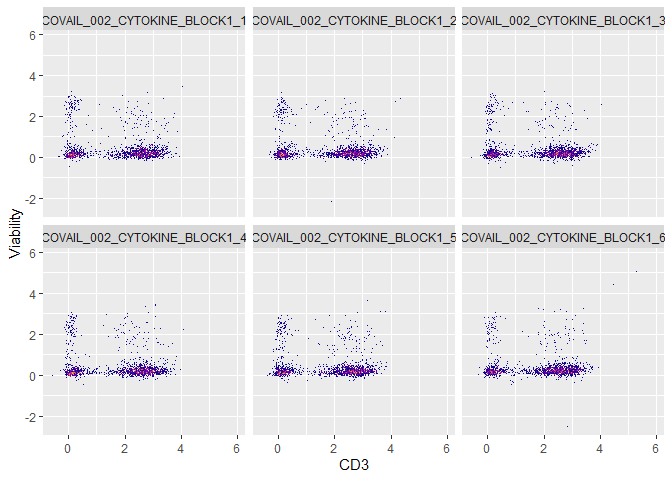
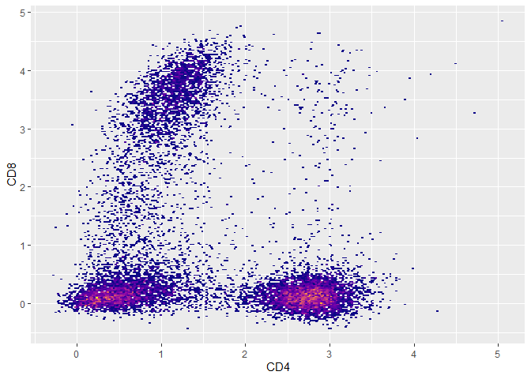
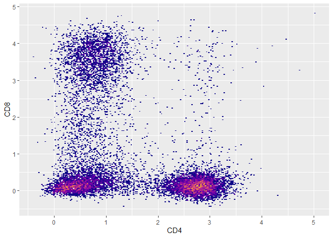

flowstate provides a system for processing, analyzing, and visualizing Flow Cytometry Standard (FCS) data.
The primary features of flowstate:
- Read and parse .fcs files as flowstate objects (S3)
- Perform spectral unmixing (Full Spectrum Cytometry/Spectral Cytometry)
- Perform spillover compensation/correction
- Transform expression values (MFI/ion counts)
- Visualize primary data
- Write FCS version 3.1 compliant files
Installation
You can install the development version of flowstate from GitHub with:
# install.packages("pak")
pak::pak("nlaniewski/flowstate")
flowstate Generalized Workflow
Paths to previously acquired .fcs files:
fcs.file.paths <- system.file("extdata", package = "flowstate") |>
list.files(full.names = TRUE, pattern = "BLOCK.*.fcs")Read/concatenate:
fs <- flowstate::read.flowstate(fcs.file.paths,colnames.type = "S",concatenate = TRUE)
#> COVAIL_002_CYTOKINE_BLOCK1_1.fcs --> flowstate
#> COVAIL_002_CYTOKINE_BLOCK1_2.fcs --> flowstate
#> COVAIL_002_CYTOKINE_BLOCK1_3.fcs --> flowstate
#> COVAIL_002_CYTOKINE_BLOCK1_4.fcs --> flowstate
#> COVAIL_002_CYTOKINE_BLOCK1_5.fcs --> flowstate
#> COVAIL_002_CYTOKINE_BLOCK1_6.fcs --> flowstate
#> Concatenating 'flowstate.ojects'...Transform:
flowstate::flowstate.transform(fs,transform.type = 'asinh',cofactor = 5000)
#> flowstate.object --> transforming...Visualize:
plot(fs,CD3,Viability) + ggplot2::guides(fill = 'none') + ggplot2::facet_wrap(~sample.id)

##update [['spill']] with a correction value
flowstate::spillover.update.value(fs,CD8,CD4,0.03)
##apply spillover correction
flowstate::spillover.apply(fs)
#> flowstate.object --> transforming...
##compensated data
plot(fs,CD4,CD8) + ggplot2::guides(fill = 'none')